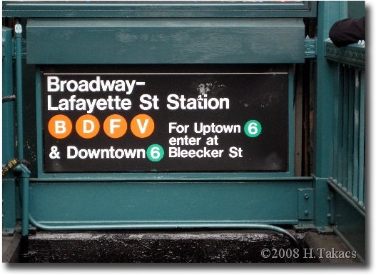

The winters in NYC get cold. Very cold at times. There are some that struggle for warmth. They wrap up on the street against buildings or huddle together in a park. It is the holiday season and are especially generous. We help them, but we don't want to subsidise bad behavior. What can you do?
Option 1
Give cash to great organizations
When I moved to New York City in 2007, I hadn't thought much about the homeless. I assumed if you didn't have a home, you were lazy or a vagrant. I was annoyed when they would panhandle on the subway or would repulse half a subway car for themselves. I saw people giving them money and would scoff to myself , "sure, buy him another bottle of booze".
I started working with Sara Chipps in late 2008. When homeless issues came up she argued passionately for having compassion for the homeless. Passionate in such a way I must be missing something. She exposed me to all the reasons people end up homeless. I hadn't considered the effect of wars and childhood trauma result in choiceless homelessness.
I would give small amounts to groups that walked through subway, passing out food, and the street fundraising coin drives because it was convienent. I noticed the donation request picked up around winter, bringing more awareness. That seemed so impersonal and I didn't feel like I was actually helping.
 In winter 2009 I found a solution. It was especially cold one night saw a regular. I walked down the stairs at the F stop Broadway/Layfette and found an older lady tightly gripping her coat with her cane and coin cup slightly quivering. I had never given directly to a homeless before. I had approximately a $10 and a $1 MetroCard. I offered the $1 MetroCard and as she reached out to receive it, I realized this gift could not do anything for her.
I retracted my offering and instead gave her with my $10 MetroCard and asked her to find someplace warm tonight, even if on the subway. The look of appreciation in her eyes sealed my plan of action for helping the homeless. I would give them $10 MetroCards to ride the subway end to end or get to a shelter they know about.
They can't use it for alcohol; they can't use it for cigarettes; they can't use it for drugs. They could only use my donation for a subway ride. I know it is a lateral subsidy for vices, but on slow nights, they could always get warm.
There are many ways that you can help. Below are a list of some of the organizations around the area and other resources that I have found useful.
And, of course, you can do your own research to find other groups and information.
Why donate to me when you can directly donate to the homeless? When the weather starts cooling and you pull out your winter coats, buy a $10 MetroCard and stick in one of the extra pockets you now have.
Next time you see someone you want to help, pull it out and give it to them. Tell them it's a $10 card they can use to get out of the cold. Be sure to wish the best for them.
I do take a limited number of donations each season. I turn off donations when I have too many cards to distribute and will return ungifted donations via paypal.
Consider giving $10 MetroCard away directly. It will feel good.
*Paypal donations are no longer accepted as I have moved out of New York City. Please keep giving.
© 2009 All rights reserved
{kind=link}
{kind=link}
{kind=link}